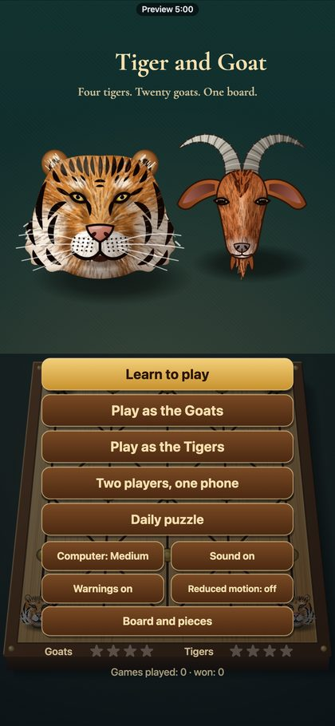
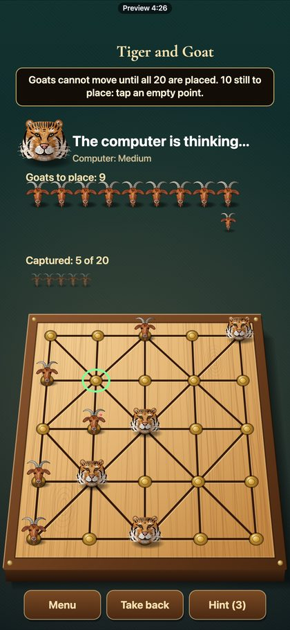
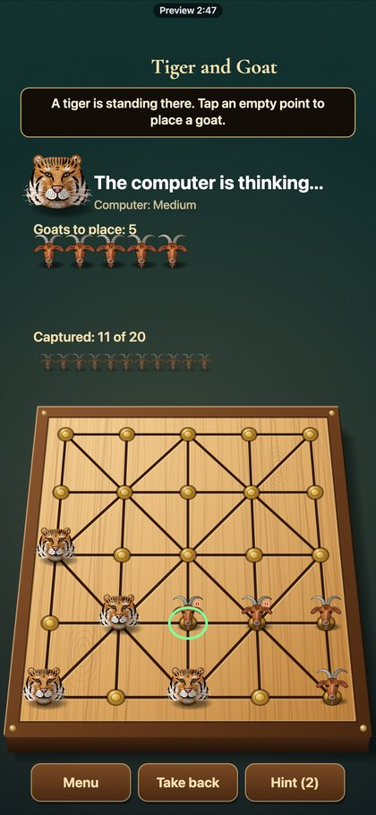
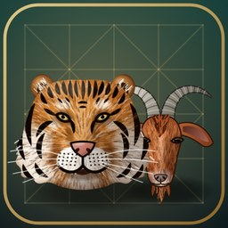

Free Preview




Tiger and Goat
Classic Board Game 🇳🇵 Nepal
Four tigers. Twenty goats. One board.
Tiger and Goat is Bagh-chal, Nepal's traditional board game. Four tigers hunt twenty goats on a board of 25 points: the goats are slow but many, the tigers few but fast. The game ends only when every goat is captured or every tiger is trapped. Learn in nine hands-on lessons, play either side against four computer levels or a friend on one phone, and solve a new puzzle every day. Win games to earn new boards and a snowy set of pieces. Hand-painted art, large text and reduced motion options. No ads, works offline.
- No ads
- Works offline
- One-time price
How to play
- New here? Tap Learn to play: nine short lessons where you make every move yourself.
- Goats go first: tap an empty point to place one. All 20 must be placed before any goat may move.
- To move, tap a piece (its legal points glow), then tap where it goes. Goats step one point along a line and never jump.
- A tiger steps one point or jumps a goat to the empty point behind it, capturing it. Goats on an edge or with a piece behind are safe.
- Move not allowed? The piece tries, comes back, and a message tells you why.
- Tigers win by capturing every goat; goats win when no tiger can move. Five captures do not end it. Three repeats is a draw.
- Warnings mark goats a tiger could take next. Hint shows a good move (3 per game). Take back undoes your last move.
- Beat each level with each side for a star. The daily puzzle is the same for all, longer on weekends. Winning unlocks boards and pieces.